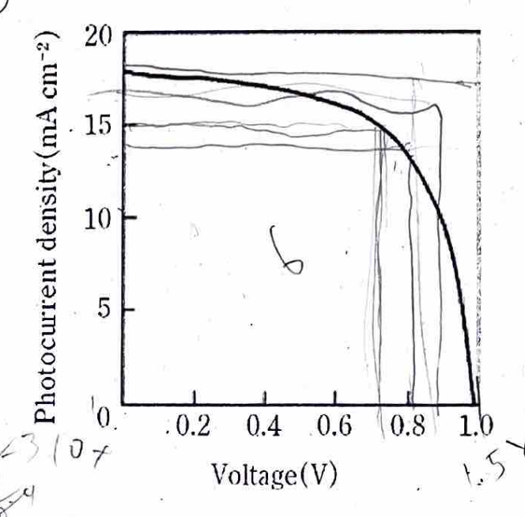

\[ \require{physics} \]
過去問を中心にして書いていく予定。
半導体デバイス
電流や抵抗率などの話
電流は、素電荷e・キャリア密度n・断面積S・平均速度vの積で表される。
\[ I = e n S v \]
また、抵抗は抵抗率 \(\rho\) と導電率 \(\sigma\) でかける。
\[ \begin{aligned} R &= \rho \frac{L}{S} = \sigma^{-1} \frac{L}{S} \end{aligned} \]
次に電流密度は次のように定義する。
\[ j = \frac{I}{S} = \frac{V}{R} \frac{1}{S} = \sigma \frac{V}{L} = \sigma E \]
ここで、キャリアの移動度という概念を導入する。金属内ではキャリアがぶつかりながら一定の平均速度で動いていると考えられる。この平均速度vは、電場Eに比例する。その比例係数を移動度 \(\mu\) と定義する。
\[ v = \mu E \]
この移動度を用いると、電流密度jは次のように表される。
\[ \begin{aligned} j &= \sigma \frac{v}{\mu} = e n v \\ \sigma &= e n \mu \end{aligned} \]
フェルミ-ディラック分布
復習の話。
まず、フェルミ準位ってのは絶対零度での化学ポテンシャル。絶対零度でこのエネルギーより下にある状態は全て電子で満たされ、このエネルギーより上にある状態は全て空になる。
それで、絶対零度以外では、フェルミ準位付近で電子が熱的に励起されるため、エネルギー状態の占有率は0か1かではなくなる。この占有率を与えるのがフェルミ-ディラック分布関数である。
\[ f_{\mathrm{fd}}(E, T) = \frac{1}{\exp\left(\frac{E - E_{\mathrm{F}}}{k_{\mathrm{B}} T}\right) + 1} \]
ここで、 \((E-F_{\mathrm{F}})/k_{\mathrm{B}} T \gg 1\) の時近似できて、
\[ f_{\mathrm{fd}}(E, T) \approx \exp\left(-\frac{E - E_{\mathrm{F}}}{k_{\mathrm{B}} T}\right) \]
同じ状況での状態密度は、次の式。
\[ G_{\mathrm{c}}(E) = \frac{1}{2 \pi^{2}} \left(\frac{2 m_{\mathrm{e}}^{*}}{\hbar^{2}}\right)^{\frac{3}{2}} \sqrt{E - E_{\mathrm{c}}} \]
\(f_{\mathrm{fd}}(E, T)\) ってのは存在する確率で、 \(G_{\mathrm{c}}(E)\) ってのはそのエネルギーに存在する状態数密度（席の数）だから、両方をかけて積分すれば、伝導帯に存在する電子の総数が求まる。
したがって、伝導帯における電子濃度は、
\[ \begin{aligned} n &= \int_{E_{\mathrm{c}}}^{\infty} G_{\mathrm{c}}(E) f_{\mathrm{fd}}(E, T) dE \\ &= N_{\mathrm{c}} \frac{2}{\sqrt{\pi}} \int_{0}^{\infty} \frac{2}{\sqrt{\pi}} \frac{\sqrt{t}}{1+\exp(t - \frac{E_{\mathrm{F}} - E_{\mathrm{c}}}{k_{\mathrm{B}} T})} dt \\ \end{aligned} \]
ここで、\(N_{\mathrm{c}}\) は伝導帯有効状態密度であり、具体的には計算で出てくる。先ほどと同じ近似で、次のように表される。
\[ n_\mathrm{c} = N_{\mathrm{c}} \exp\left(-\frac{E_{\mathrm{c}} - E_{\mathrm{F}}}{k_{\mathrm{B}} T}\right) \]
真性半導体
真性半導体ってのは、電子と正孔の数が等しい半導体のこと。つまり、ドーピングされていない純粋な半導体。
\[ \begin{aligned} n &= N_{\mathrm{c}} \exp\left(-\frac{E_{\mathrm{c}} - E_{\mathrm{F}}}{k_{\mathrm{B}} T}\right) \\ p &= N_{\mathrm{v}} \exp\left(-\frac{E_{\mathrm{F}} - E_{\mathrm{v}}}{k_{\mathrm{B}} T}\right) \\ n &= p \\ \Rightarrow E_{\mathrm{F}} &= \frac{E_{\mathrm{c}} + E_{\mathrm{v}}}{2} + \frac{k_{\mathrm{B}} T}{2} \ln\left(\frac{N_{\mathrm{v}}}{N_{\mathrm{c}}}\right) \\ n &= p = \sqrt{N_{\mathrm{c}} N_{\mathrm{v}}} \exp\left(-\frac{E_{\mathrm{c}} - E_{\mathrm{v}}}{2 k_{\mathrm{B}} T}\right) \\ &= \sqrt{N_{\mathrm{c}} N_{\mathrm{v}}} \exp\left(-\frac{E_{\mathrm{g}}}{2 k_{\mathrm{B}} T}\right) \end{aligned} \]
チェックポイント
- 真性半導体キャリア密度を式で表せ。真性キャリア密度は \(E_{\mathrm{g}}\) にどう依存するか？
- 半導体キャリア密度の温度依存性によって禁制帯幅を測定する方法を説明せよ。
- \(N_\mathrm{V} = 4N_\mathrm{C}\) のとき、真性半導体のフェルミ準位はバンドギャップは中央からどれほどずれるか。
- \(\sqrt{N_\mathrm{c}N_\mathrm{v}} \exp\left(-\frac{E_{\mathrm{g}}}{2 k_{\mathrm{B}} T}\right)\) で、キャリア密度は \(E_{\mathrm{g}}\) が増加すると、減少する。
- 真性キャリア密度の温度依存性は上の式で表されるので、 \(\ln n\) を \(1/T\) に対してプロットすると、傾きが \(-E_{\mathrm{g}}/2 k_{\mathrm{B}}\) になる。これにより、禁制帯幅 \(E_{\mathrm{g}}\) を測定できる。
- \(E_\mathrm{F} - \frac{E_\mathrm{c} + E_\mathrm{v}}{2} = \frac{k_\mathrm{B} T}{2} \ln 4 \approx 0.048 \ \mathrm{eV}\) だけ中央から上にずれる。
\(T=300\ \mathrm{K}\) で、Si にドナーを \(N_D=1.00\times10^{16}\ \mathrm{cm^{-3}}\) ドーピングした。
イオン化していないドナー（ドナー準位に電子がいる）密度 \(n_d\) は
\[ n_d = N_D f_D(E_D) = \frac{N_D}{1+\frac12\exp\!\left(\frac{E_D-E_F}{k_BT}\right)} \]
で与えられる。
- \(E_D-E_F \gg k_BT\) を用いて近似せよ。
- \(N_C=2.80\times10^{19}\ \mathrm{cm^{-3}}\)
- ドナー準位は伝導帯端より \(45\ \mathrm{meV}\) 下： \(E_D = E_C-45\ \mathrm{meV}\)
を使い、イオン化していないドナーの比率を求めよ。
- 近似すると、
\[ \begin{aligned} n_\mathrm{d} &\approx 2N_\mathrm{D} \exp \qty(\frac{E_\mathrm{F}-E_\mathrm{D}}{k_\mathrm{B} T}) \\ n_\mathrm{c} &= N_\mathrm{C} \exp \qty(-\frac{E_\mathrm{C}-E_\mathrm{F}}{k_\mathrm{B} T}) \\ \Rightarrow r = \frac{n_\mathrm{d}}{n_\mathrm{d} + n_\mathrm{c}} &= \frac{1}{1 + \frac{N_\mathrm{C}}{2N_\mathrm{D}} \exp \qty(-\frac{E_\mathrm{C} - E_\mathrm{D}}{k_\mathrm{B} T})} \\ &= 0.0041 \end{aligned} \]
ドーピング半導体のキャリア密度
ドーピング半導体では、ドナーやアクセプターが導入されることで、キャリア密度が変化する。例えば、n型半導体ではドナーが導入され、伝導帯に電子が供給される。一方、p型半導体ではアクセプターが導入され、価電子帯に正孔が供給される。
まず、n型半導体では \(E_\mathrm{c}\) の下に ドナー準位 \(E_\mathrm{D}\) ができて、余った電子が入る。で、このドナー準位での電子占有率は、
\[ f_D(E_D) = \frac{1}{1 + \frac{1}{2} \exp\left(\frac{E_D - E_F}{k_B T}\right)} \]
と書かれる。これはフェルミ-ディラック分布関数関数とは違って、 \(E_\mathrm{D}\) という特定のエネルギー準位での占有率を表している。分布ではない。
ドナー準位は2つの電子が入れるため、分母に \(\frac{1}{2}\) がついている。この計算の詳細は省略する。
ただ以降は、基本的にはドナー準位には電子がほぼなくて、アクセプター準位には電子がほぼ満たされている、という近似を使う。
それで、不純物の挿入によってエネルギー準位が変化した結果、\(n, p\) の値を考えていく。
これをどうやって考えるかというと、まず元の状態でのフェルミ準位を \(E_{\mathrm{i}}\) としたとき、
\[ \begin{aligned} n &= N_{\mathrm{c}} \exp\left(-\frac{E_{\mathrm{c}} - E_{\mathrm{F}}}{k_{\mathrm{B}} T}\right) \\ &= N_{\mathrm{c}} \exp\left(-\frac{E_{\mathrm{c}} - E_{\mathrm{i}}}{k_{\mathrm{B}} T}\right) \exp\left(-\frac{E_{\mathrm{i}} - E_{\mathrm{F}}}{k_{\mathrm{B}} T}\right) \\ &= n_{\mathrm{i}} \exp\left(-\frac{E_{\mathrm{i}} - E_{\mathrm{F}}}{k_{\mathrm{B}} T}\right) \\ p &= p_{\mathrm{i}} \exp\left(\frac{E_{\mathrm{i}} - E_{\mathrm{F}}}{k_{\mathrm{B}} T}\right) \\ np &= n_{\mathrm{i}}^{2} = N_{\mathrm{c}} N_{\mathrm{v}} \exp\left(-\frac{E_{\mathrm{g}}}{k_{\mathrm{B}} T}\right) \end{aligned} \]
これに合わせて、
\[ n + N_{\mathrm{a}} = p + N_{\mathrm{d}} \]
という電気的中性条件を考えると、 \(n\) と \(p\) を求めることができる。
\[ n = \frac{1}{2} \left[(N_{\mathrm{d}} - N_{\mathrm{a}}) + \sqrt{(N_{\mathrm{d}} - N_{\mathrm{a}})^{2} + 4 n_{\mathrm{i}}^{2}}\right] \]
次に、フェルミ準位について考えれば、 \(n=p\) となるところだから、
\[ \begin{aligned} n&= p \\ N_{\mathrm{c}} \exp\left(-\frac{E_{\mathrm{c}} - E_{\mathrm{F}}}{k_{\mathrm{B}} T}\right) &= N_{\mathrm{v}} \exp\left(-\frac{E_{\mathrm{F}} - E_{\mathrm{v}}}{k_{\mathrm{B}} T}\right) \\ \Rightarrow E_{\mathrm{F}} &= \frac{E_{\mathrm{c}} + E_{\mathrm{v}}}{2} + \frac{k_{\mathrm{B}} T}{2} \ln\left(\frac{N_{\mathrm{v}}}{N_{\mathrm{c}}}\right) \end{aligned} \]
\[ \boxed{V_{FB}=\phi_m-\phi_s \;\;(\text{+ 追加があれば }-Q_{ox}/C_{ox})} \]
光デバイス
結合状態密度
半導体のバンド感繊維による光吸収の吸収係数は結合状態密度
\[ J_{\mathrm{cv}}(E) = \frac{1}{V} \sum_k \delta(E_{\mathrm{c}}(k) - E_{\mathrm{v}}(k) - E)\delta(\mathbfit{k} - \mathbfit{k}' - \mathbfit{K}) \]
にほぼ比例する。
式の和は実質的に同じ波数を持つ荷電子帯電子と伝導帯電子の組み合わせのみでいい理由を述べよ。
次のようなバンド構造を有する半導体の結合状態密度を求めよ。
\[ \begin{aligned} E_{\mathrm{c}}(k) &= E_{\mathrm{g}} + \frac{\hbar^{2} k^{2}}{2 m_{\mathrm{e}}^{*}} \\ E_{\mathrm{v}}(k) &= -\frac{\hbar^{2} k^{2}}{2 m_{\mathrm{h}}^{*}} \end{aligned} \]

SiとGaAsの光吸収スペクトルの違いを説明せよ。
Si と GaAs それぞれについて、バンドギャップエネルギーよりも \(0.5\ \mathrm{eV}\) 高エネルギーの光を 99% 吸収するために必要な半導体の厚さを求めよ。
SiとGaAsの特徴と違いを簡潔に述べよ。
まず、決勝内の電子の波動関数はブロッホ関数で表される。詳しくは固体物理学の記事で書いてある。
それで、ここで考えるべきは、光の吸収なので、光によってもたらされるハミルトニアンの摂動は次の通り。
\[ \begin{aligned} H' &= -e \mathbfit{r} \cdot \mathbfit{E} \\ \mathbfit{E} &= \mathbfit{E}_0 e^{i(\mathbfit{K} \cdot \mathbfit{r} - \omega t)} \end{aligned} \]
で、これを波動方程式に入れてまとめ上げると、\(\Psi = \sum_n a_n(t) \psi_n e^{-i E_n t/\hbar}\) として、途中から \(m \to n\) を \(0 \to n\) に遷移を変えると、
\[ |a_m(t)|^2 = \frac{2\pi}{\hbar} |\langle n | H' | 0 \rangle|^2 \delta(E_n - E_0 - \hbar \omega) t \]
で、こいつはフェルミの黄金律と呼ばれる。要するに、波動方程式を摂動的に解いたときの、ある状態から別の状態への遷移確率を与える式である。
で、こいつの時間あたりの遷移確率を出すと、
\[ W_{0 \to n} = \frac{2\pi}{\hbar} |\langle n | H' | 0 \rangle|^2 \delta(E_n - E_0 - \hbar \omega) \]
でこっから結局どれだけ時間あたりにパワーが吸収されるかを考えると、\(\mathrm{c} \to \mathrm{v}\) の遷移を全部足し合わせればいいので、
\[ \begin{aligned} E_{\mathrm{c} \to \mathrm{v}} &= E_{\mathrm{g}} + \frac{\hbar ^2 k^2}{2\mu} \\ P_{\mathrm{abs}} &= \sum_k \hbar \omega W_{\mathrm{c} \to \mathrm{v}} \\ &= \hbar \omega\frac{2\pi}{\hbar} |\langle \mathrm{c} | H' | \mathrm{v} \rangle|^2 \underbrace{ \sum_k \delta(E_{\mathrm{c} \to \mathrm{v}} - \hbar \omega) }_{= J_{\mathrm{c} \to \mathrm{v}}(E_{\mathrm{c} \to \mathrm{v}}) \times V} \\ \sum_k &= \underbrace{2}_{電子のスピンが2} \times \qty( \frac{L}{2\pi} )^3 \int 4\pi k^2 \mathrm{d}k \\ P_{\mathrm{abs}} &= \hbar \omega \frac{2\pi}{\hbar} |\langle \mathrm{c} | H' | \mathrm{v} \rangle|^2 \times 2 \times \qty( \frac{L}{2\pi} )^3 \int \delta(E_{\mathrm{c} \to \mathrm{v}} - \hbar \omega) 4\pi k^2 \mathrm{d}k \\ &= \hbar\omega\frac{2\pi}{\hbar} L^3 |\langle \mathrm{c} | H' | \mathrm{v} \rangle|^2 \int \frac{2}{(2\pi)^3} \delta(E_{\mathrm{c} \to \mathrm{v}} - \hbar \omega) 4\pi k^2 \mathrm{d} k \\ &= \text{定数} \times \underbrace{\int \frac{2}{(2\pi)^3} \delta(E_{\mathrm{c} \to \mathrm{v}} - \hbar \omega) 4\pi k^2 \mathrm{d} k}_{= J_{\mathrm{c} \to \mathrm{v}}(E_{\mathrm{c} \to \mathrm{v}}) } \\ &= \text{定数} \times J_{\mathrm{c} \to \mathrm{v}}(E) \quad (E = E_{\mathrm{c} \to \mathrm{v}}) \\ J_{\mathrm{c} \to \mathrm{v}}(E) &= \frac{1}{\pi^2} \int \delta\left( E - \hbar \omega \right) k^2 (E - E_\mathrm{g}) \dv{k}{E} \dd E\\ &= \frac{1}{2\pi^2} \qty( \frac{2\mu}{\hbar^2} )^{3/2} \underbrace{\int \delta(E - \hbar \omega) \sqrt{E - E_\mathrm{g}} \dd E}_{E = \hbar \omega の時の\sqrt{E - E_\mathrm{g}}の値の定義} \\ &= \frac{1}{2\pi^2} \qty( \frac{2\mu}{\hbar^2} )^{3/2} \sqrt{\hbar \omega - E_\mathrm{g}} \end{aligned} \]
結晶の電子の波数のスケールに比べて可視光の波数は非常に小さいため、光吸収過程において波数保存則を満たす遷移は \(\mathbfit{k} \approx \mathbfit{k}'\) の組み合わせに限られる。
詳細は理論のところで説明している。 \[ \begin{aligned} J_{\mathrm{cv}}(E) &= \frac{1}{V} \sum_k \delta(E_{\mathrm{c}}(k) - E_{\mathrm{v}}(k) - E) \\ &= \frac{1}{V} \sum_k \delta\left(E_{\mathrm{g}} + \frac{\hbar^{2} k^{2}}{2 \mu} - E\right) \\ &= \frac{1}{(2\pi)^{3}} \int 4 \pi k^{2} \delta\left(E_{\mathrm{g}} + \frac{\hbar^{2} k^{2}}{2 \mu} - E\right) \mathrm{d} k \\ &= \frac{1}{2 \pi^{2}} \left(\frac{2 \mu}{\hbar^{2}}\right)^{\frac{3}{2}} \sqrt{E - E_{\mathrm{g}}} \end{aligned} \]
Siは間接遷移型半導体であり、光吸収においてはフォノンの関与が必要となるが、GaAsは直接遷移型半導体である。前者は立ち上がりが鈍く、後者は急峻である。それだけではなく、バンドギャップの値に関しても、Siは約1.1 eV、GaAsは約1.4 eVであり、これも吸収スペクトルに影響を与える。
\[ I = I_0 e^{-\alpha x} \]
99%吸収するためには、\(I/I_0 = 0.01\) となるので、 \[ 0.01 = e^{-\alpha x} \\ \Rightarrow x = \frac{\ln(100)}{\alpha} \] あとは \(\alpha\) の値をSiとGaAsのデータから読み取り、計算すればよい。Siについては \(1.6 \mathrm{eV}\) あたりで \(\alpha \approx 10^3 \mathrm{cm^{-1}}\)、GaAsについては \(1.9 \mathrm{eV}\) あたりで \(\alpha \approx 30000 \mathrm{cm^{-1}}\) とすると、
| 材料 | 吸収係数 \(\alpha\) (\(\mathrm{cm^{-1}}\)) | 必要な厚さ \(x\) (cm) |
|---|---|---|
| Si | \(10^3\) | \(4.6 \times 10^{-3}\) |
| GaAs | \(30000\) | \(1.5 \times 10^{-4}\) |
| 材料 | 特徴 | 違い |
|---|---|---|
| Si | 間接遷移型半導体、豊富な資源、低コスト | 吸光効率が低い、厚い層が必要 |
| GaAs | 直接遷移型半導体、高コスト | 吸光効率が高い、薄い層で十分 |
量子効率
- 間接遷移型半導体が発光デバイスに不向きな理由を説明せよ。
- Siの発光性再結合寿命は約 \(10^{-3}\ \mathrm{s}\) であり、非発光性再結合寿命は約 \(10^{-6}\ \mathrm{s}\) である。一方、GaAsの発光性再結合寿命は約 \(10^{-9}\ \mathrm{s}\) であり、非発光性再結合寿命は約 \(10^{-7}\ \mathrm{s}\) である。これらの値を用いて、SiとGaAsの内量子効率をそれぞれ求めよ。
\[ \begin{aligned} \dv{\Delta n}{t} &= \underbrace{-\frac{\Delta n}{\tau_r}}_{\text{発光性再結合}} - \underbrace{\frac{\Delta n}{\tau_{nr}}}_{\text{非発光性再結合}} = -\frac{\Delta n}{\tau} \\ \Delta n(t) &= \Delta n(0) \exp\left(-\frac{t}{\tau}\right) \\ \eta &= \frac{\tau_{nr}}{\tau_r + \tau_{nr}} \end{aligned} \]
内部量子効率は、1に近いほど発光効率が高いと考えればいい。つまり、発光性再結合時間が短く、非発光性再結合時間が長いほど、内部量子効率は高くなる。
- 間接遷移半導体における発光再結合はフォノンの放出または吸収を同時に伴う必要があり、遷移確率が著しく小さくなる。結果として発光再結合寿命が長くなり、非発光再結合が支配的となるため、間接遷移半導体は発光しにくい。
- Siの場合、 \[ \begin{aligned} \eta_{\mathrm{Si}} &= \frac{\tau_{nr}}{\tau_r + \tau_{nr}} = \frac{10^{-6}}{10^{-3} + 10^{-6}} \approx 0.001 \end{aligned} \] GaAsの場合、 \[ \begin{aligned} \eta_{\mathrm{GaAs}} &= \frac{\tau_{nr}}{\tau_r + \tau_{nr}} = \frac{10^{-7}}{10^{-9} + 10^{-7}} \approx 0.99 \end{aligned} \]
効率関連

上の図のような赤色半導体発光デバイスにおいて、電流33mAの時のパワー変換効率、スロープ効率、外部量子効率、内部量子効率の概算を求めよ。
効率関連は、とりあえず定義をわかっていればいい。
| 種類 | 定義 |
|---|---|
| パワー変換効率 \(\eta_{\mathrm{P}}\) | 出力光パワー \(P_{\mathrm{out}}\) を入力電力 \(P_{\mathrm{in}}\) で割ったもの。 \(\eta_{\mathrm{P}} = \frac{P_{\mathrm{out}}}{P_{\mathrm{in}}}\) |
| スロープ効率 \(\eta_{\mathrm{S}}\) | 出力光パワーの電流に対する微分。 \(\eta_{\mathrm{S}} = \dv{P_{\mathrm{out}}}{I}\) |
| 外部量子効率 \(\eta_{\mathrm{ext}}\) | 入力電流に対する出力光子数の比率。 \(\eta_{\mathrm{ext}} = \frac{\text{出力光子数}}{\text{入力電子数}}= \frac{1}{h\nu}\dv{P}{t}/\frac{1}{q}\dv{I}{t}=\frac{q}{h\nu}\dv{P}{I}=\frac{q\lambda}{hc}\dv{P}{I}\) |
| 内部量子効率 \(\eta_{\mathrm{int}}\) | 発光再結合に寄与する電子と正孔の比率。 \(\eta_{\mathrm{int}} = \frac{\text{発光再結合数}}{\text{全再結合数}}\) |
特に内部量子効率は
\[ \begin{aligned} \eta_{\mathrm{int}} &= \eta_{\mathrm{ext}} \frac{\alpha_\mathrm{m}}{ \alpha_\mathrm{m} + \alpha_\mathrm{i} } \\ \alpha_\mathrm{m} &= \frac{1}{L} \ln\left(\frac{1}{R_1 R_2}\right) \\ L &\approx 300\ \mathrm{\mu m} \\ R_1 = R_2 &\approx 0.3 \\ \alpha_\mathrm{i} &\approx 10\ \mathrm{cm^{-1}} \end{aligned} \]
また、視感効率というあたいが過去問では出てきたのだが、人間の目では \(683 \mathrm{lm/W}\) が最大視感効率で、赤色光では約 \(0.5\) 倍程度になる。で、その値が必要になる問題が出ることがある。
グラフを見て値を代入するだけなので略
太陽電池
下図のようなJ-V特性を持つ太陽電池がある。これの開放電圧、短絡電流密度、FFと電力変換効率を求めよ。

それぞれ\(I = 0\) のときの電圧が開放電圧 \(V_{\mathrm{oc}}\) 、\(V=0\) のときの電流が短絡電流密度 \(J_{\mathrm{sc}}\) である。FFはフィルファクターで、最大出力点の電圧と電流の積を \(V_{\mathrm{oc}} J_{\mathrm{sc}}\) で割ったものである。最後に、電力変換効率 \(\eta\) は、最大出力を入射光パワーで割ったものである。つまり、 \(FF/ V_{\mathrm{oc}} J_{\mathrm{sc}}\)